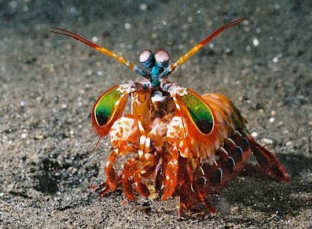
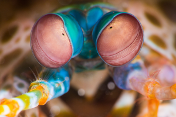
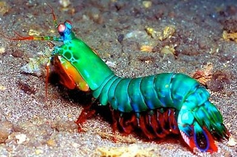
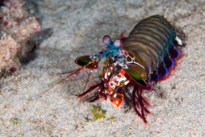
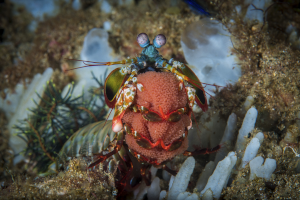

Fatos sobre o Stomatopoda
Conheça o camarão poderoso que pode quebrar aquário de vidro Com sua garra
Stomatopoda (ou estomatópode), chamados popularmente de tamarutacas ou de lacraias-do-mar no Brasil nome científico Odontodactylus scyllarus , é uma ordem de crustáceos marinhos da subclasse Hoplocarida, que agrupa cerca de 400 espécies, caracterizadas principalmente pela morfologia da segunda pata torácica, que é modificada em apêndice subquelado, lembrando uma pata de louva-a-deus.
| Nome científico: | Stomatopoda (por exemplo, ODONTODACTYLUS SCYLLARUS); |
| Outros nomes: | Stomatopod, gafanhoto do mar, polegar splitter, camarão assassino |
| Características particulares: | Olhos montado em hastes móveis que se podem mover independentemente uns dos outros; |
| Tamanho médio: | 10 cm (3,9 pol); |
| Dieta: | carnívora; |
| Esperança de vida: | 20 anos; |
| Habitat: | ambientes marinhos tropicais e subtropicais rasos; |
| Reino: | Animalia; |
| Filo: | Arthropoda; |
| Subfilo: | Crustacea; |
| Classe: | Malacostraca; |
| Order: | Stomatopoda; |
Garras
As maiores esmagadoras, tais como exemplares de Odontodactylus scyllarus, são capazes de desferir um dos mais rápidos e violentos golpes do reino animal, um soco que pode apresentar a velocidade de um tiro calibre 22 (equivalente a 720km/h) e uma força de impacto de 60 kg/cm².[3] Essa força esmagadora é a responsável pelo seu título de "lagosta-boxeadora" e é capaz de facilmente quebrar a carapaça de um caranguejo, as conchas duras e calcificadas de gastrópodes ou até mesmo quebrar o vidro reforçado de um aquário.
Visão
Esses animais possuem o mais complexo sistema de visão de cores do mundo animal, pois enxergam 12 cores primárias, correspondentes aos 12 pigmentos distintos presentes em sua retina.
Nossos olhos possuem três tipos desses receptores - que correspondem à luz azul, verde e vermelha -, que nos permitem perceber o espectro de cores que vemos. Os cães contam com apenas dois tipos de cones (verde e azul), e é por isso que eles vêm tons de azul, verde e um pouco de amarelo. Muitos anfíbios, répteis, aves e insetos possuem quatro tipo de cones, o que significa que espécies dessas classes conseguem ver cores que o nosso cérebro é incapaz de processar. Algumas espécies específicas de borboletas e possivelmente pombos possuem cinco cones de percepção de cor, o que aumenta ainda mais a quantidade de pigmentos que eles são capazes de perceber. O sistema de visão dos estomatópodes possui doze cones sensíveis à luz e outros quatro que filtram a luz (16 cones no total), o que lhes permite ver cores polarizadas e imagens
multiespectrais.Habitate
O camarão mantis vive em águas tropicais e subtropicais em todo o mundo. A maioria das espécies vivem nos oceanos Índico e Pacífico. Algumas espécies vivem em ambientes marinhos temperados. Stomatopods construir suas tocas em águas rasas, incluindo recifes, canais e pântanos.
Comportamento
Camarões Mantis são muito inteligentes. Eles reconhecem outros indivíduos por visão e o cheiro, e eles demonstram uma capacidade de aprender. Os animais têm um comportamento social complexo , que inclui a luta ritualizada e atividades coordenadas entre os membros de um casal monogâmico. Eles usam fluorescentes padrões para sinalizar uns aos outros e, possivelmente, outras espécies.
Ciclo de reprodução e Vida
Em média, um camarão mantis vive 20 anos. Durante sua vida útil, pode produzir 20 a 30 vezes . Em algumas espécies, a única interacção entre machos e fêmeas ocorre durante o acasalamento. A fêmea deposita os ovos, quer na sua toca ou transporta-los ao redor com ela. Em outras espécies, companheiro de camarão em relações monogâmicas, ao longo da vida, com ambos os sexos cuidam de ovos. Após a eclosão,descendentes passar três meses como zooplâncton antes de muda em sua forma adulta.
Fonte
https://www.greelane.com/pt/ci%C3%AAncia-tecnologia-matem%C3%A1tica/animais-e-natureza/mantis-shrimp-facts-4582442/ 25/08/2020 as 20:00
https://pt.wikipedia.org/wiki/Stomatopoda 25/08/2020 as 20:00 https://theoatmeal.com/comics/mantis_shrimp 25/08/2020 as 20:00